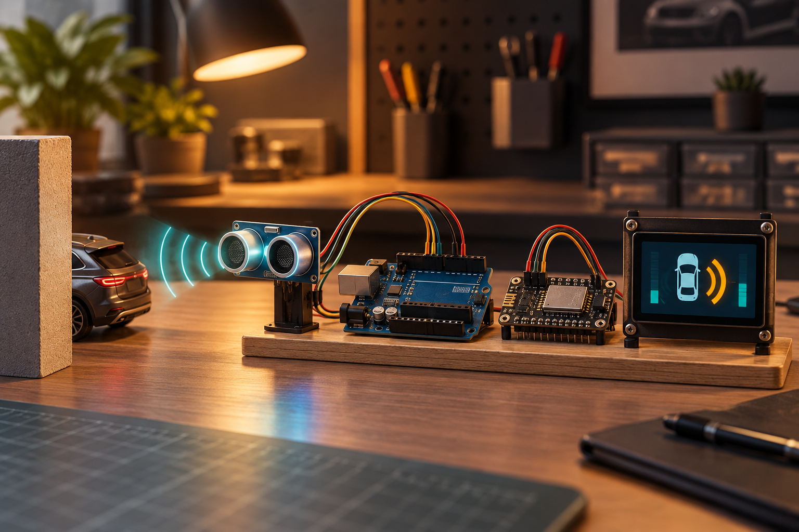
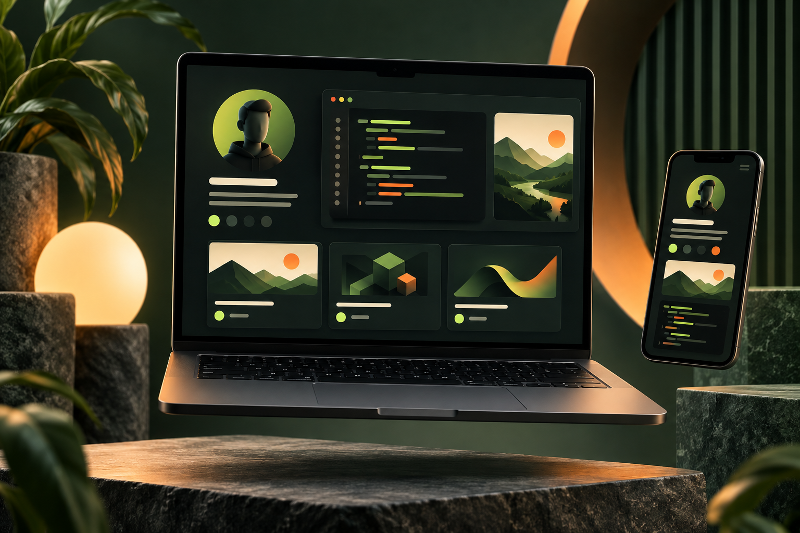

01
Car Parking Management System
A SQL Server database project for managing parking allocation and vehicle records. It brings everyday parking operations into a structured, queryable system.
Chandan Kumar · BCA Student · India
I’m Chandan, a BCA student at Lovely Professional University, working across web, embedded systems, and data structures.

const chandan = {
focus: "full stack",
building: "real projects",
curiosity: Infinity
};
01 / ABOUT
I’m working toward becoming a full-stack developer—starting with frontend fundamentals, moving into backend development, and aiming to be comfortable across the whole stack.
Alongside building, I practice DSA in C++ and solve problems on LeetCode. I study the fundamentals closely: DBMS, Operating Systems, Computer Networks, and Computer System Architecture.
See my toolkit →02 / SELECTED WORK
01
A SQL Server database project for managing parking allocation and vehicle records. It brings everyday parking operations into a structured, queryable system.
02
An online storefront created for browsing and buying watches. The project focuses on presenting products clearly in a familiar shopping experience.
03
Simulated hospital network infrastructure designed in Cisco Packet Tracer. It maps reliable connectivity across the departments that need to communicate.

04
An IoT safety device built with Arduino and NodeMCU, using a DHT22 sensor and LCD display to provide immediate environmental feedback.
05
A C++ program that models a metro map as a graph and finds efficient shortest paths using Dijkstra’s algorithm.

06
This personal portfolio: a focused space to share my work, skills, and the path I’m taking toward full-stack development.
03 / TOOLKIT
C · C++ · Python · JavaScript
HTML · CSS · Bootstrap · React · Angular · Ionic
SQL Server
Git · GitHub · VS Code
Arduino IDE · NodeMCU · Cisco Packet Tracer
04 / NOW LEARNING
Exploring data structures, object-oriented programming, backend development, and interview-focused problem solving—one concept, one project, one challenge at a time.
AVAILABLE FOR OPPORTUNITIES